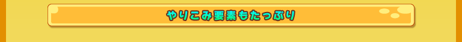
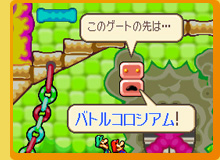
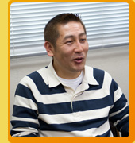
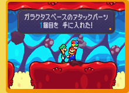

―― |
難易度調整はどのようなところに気をつけられましたか？ |
|
窪田： |
難易度といいますか、全体のバランス調整にはシリーズの中で一番時間をかけました。いろいろな人にプレイしてもらったアンケートでわかった不満にすべて対応していったので、一番いいバランスになったのかなと思います。 |
 |
岩崎： |
いや、そんなことないですよ（笑）。 |
|
大谷： |
本当に鬼の難しさですよ。私も最後のバトルがいまだにクリアできていないですからね（笑）。 |
 |
岩崎： |
社内的にもクリアできているのは本当に数人ですよ。物語に登場するボスというのは、プレイされるほとんどの方がクリアできないといけないのですが、そうではない手ごたえあるボスと戦う面白さも絶対に残したかったんです。 |
|
大谷： |
上手く難易度の調整が取れなければ、難易度をふたつ用意しようとも提案したんですけど、RPGでそれはやりたくないと断られたんです（笑）。ですが、上手い人に向けた手ごたえはもっと必要だと感じました。もっと強いボスや手強い謎解きに挑戦したい方もいるはずなので、それは別の形で入れましょうということで今の形に落ち着きました。 |
|
岩崎： |
今回はアクション要素が強いのですが、やはりRPGですのでアクションが苦手な人でも、いろいろなものを集めたりレベルを上げたり装備をカスタマイズしていくことで先に進めるようにしています。 |
|
―― |
そういったアイテム集めも含めて、やりこみ要素としてどのようなものが入っているのかご紹介いただけますか？ |
 |
窪田： |
ブロキャット探し、マメ集め、アタックパーツ集め、クッパ軍団救出、体内のバトルコロシアムとスペシャルアタックを使ったミニゲーム、クッパ側のスペシャルアタックのミニゲーム… 他にもいろいろあります。 |
|
佐野： |
あと、各キャラクターにランクがあるのですが、レベルを上げて最高のランクまで行くとまたご褒美がありますので、ぜひ手に入れてもらいたいです。 |